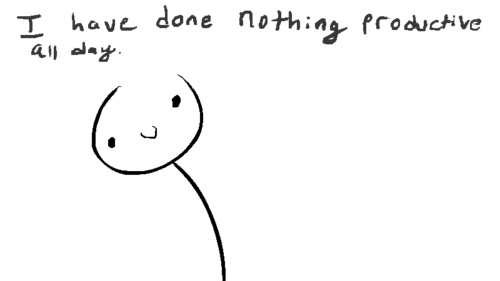

RAYVIE
I am a master at procrastinating!
 Assignments? Projects? Activities? Responsibilities? If I can do it later, I'll do it later. This is what is usually found in my mind during my daily life. I never do anything until its deadline. "Never put off until tomorrow which can be put off until next week" is one of my favorite motto. In fact, this very website was made right before its deadline though I started like weeks ago.